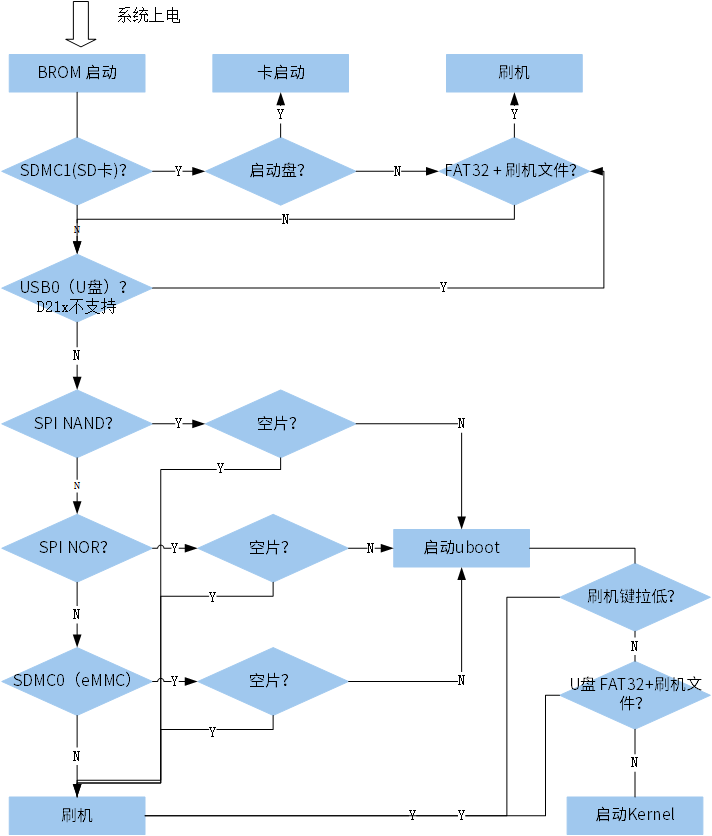

系统更新流程
系统更新流程因产品和平台而异，关于各个产品平台所支持的更新方式，可查看 平台升级方式。
刷机模式
-
空片直接进入：开发板上存储介质为空片，则上电直接进入刷机模式。
-
短路烧录引脚：短路烧录引脚（PA0）到地，则上电直接进入刷机模式。
-
按住刷机键：如果开发板有刷机按键，则按住刷机键上电或者 reset，进入刷机模式，开发板上标注为 uboot 按键。
-
短路存储介质引脚：短路存储介质的 command、clk 等引脚到地，造成读数据失败，则上电直接进入刷机模式，如短路 SPI NAND 的 4、5 脚。
-
通过控制台命令：如果开发板能进入 U-Boot ，在开机的过程中按住 Ctrl + c, 则系统会进入 U-Boot 控制台，输入 aicupg usb 0 命令可以进入烧写模式。
-
Linux 控制台命令：如果开发板能能进入 Linux 控制台，输入 aicupg 命令，系统可以重启后进入烧写模式。
-
ADB 服务：如果开发板能能进入 Linux 系统，并且 ADB 服务开启，刷机工具会检查到设备并使能 “开始” 按钮，可以直接点击开始刷机。
刷机流程
-
等待系统上电，启动 SoC 内部的 BROM 程序。
-
BROM 按照如下顺序检查存储介质中是否有系统数据：
-
SDMC1 （SD 卡）
-
SPI NAND
-
SPI NOR
-
SDMC0（eMMC）
-
-
根据检测到的存储介质中的数据，BROM 执行以下相应启动操作：
- 如果检测到 SD 卡，且 SD 卡为启动盘，执行卡启动。
- 如果检测到 SD 卡，且 SD 卡中是 FAT32 文件系统，并且有刷机的两个文件，则进行 SD 卡刷机。
- 如果检测到存储介质 SPI NAND、SPI NOR 或 eMMC，且其中含有数据，则执行启动系统。
-
U-Boot 执行以下检查，并根据检查结果，进入不同模式：
- 检查刷机键（PA0）是否被拉低，拉低则进入刷机模式，否则启动 kernel。
- 检查 U 盘（USB0）中是否是 FAT32 文件系统，并且是否有刷机的两个文件，两个条件均满足则进行 U 盘刷机，否则启动
kernel。
kernel 启动成功后会挂载 rootfs，系统正常启动。

OTA 流程
-
系统启动到正常状态，准备升级需要的固件。
-
通过 OTA 方式下载固件到本地，或通过 SD 卡，U 盘，USB 线等外部存储器将固件复制到本地。
-
设置升级标记，重启系统。
系统重新启动后会进入升级系统，
-
升级开发板到新的固件。
升级过程中出现异常掉电，下次启动还能够继续完成剩下的升级过程。
升级完成后重新启动系统即可进入新系统。
关于 OTA 升级逻辑的详细使用说明，可参考 OTA 方案。